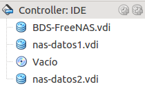
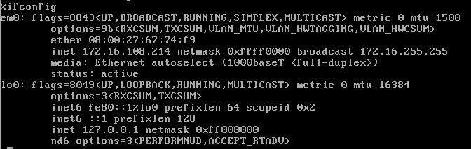
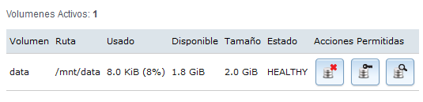

- Módulo: Fuw
- Título del trabajo FreeNAS
- Componentes del grupo: Carlos Santos
- Curso Académico: 2013/2014
- Fecha de entrega: 28 de Abril de 2014
Como primer paso,creamos una maquina virtual y la ponemos en modo puente, insertamos los siguientes volumenes en y seguidamente instalamos el FreeNAS.
Una vez instalado el FreeNAS,configuramos todo lo que tiene que ver con la red.Ip,dns,gateway,etc.
Una vez configurado.Accedemos desde otra maquina virtual de la red y entramos en el servidor NAS poniendo la ip en el navegador. Vamos a "Storage -> Volumes -> UFS Volume Manager". Si lo necesitamos, crear directorio /mnt/volumen1, para montar el volumen.
Vamos a "Servicios" -> "Control de Servicios - > CIFS -> lo activamos.
Vamos al servidor FreeNAS y ejecutamos los siguientes comandos:
df -hT (Para comprobar que está montado el volumen1)
mkdir /mnt/volumen1/public
chmod 777 /mnt/volumen1/public (Creamos una carpeta de uso público lectura/escritura).